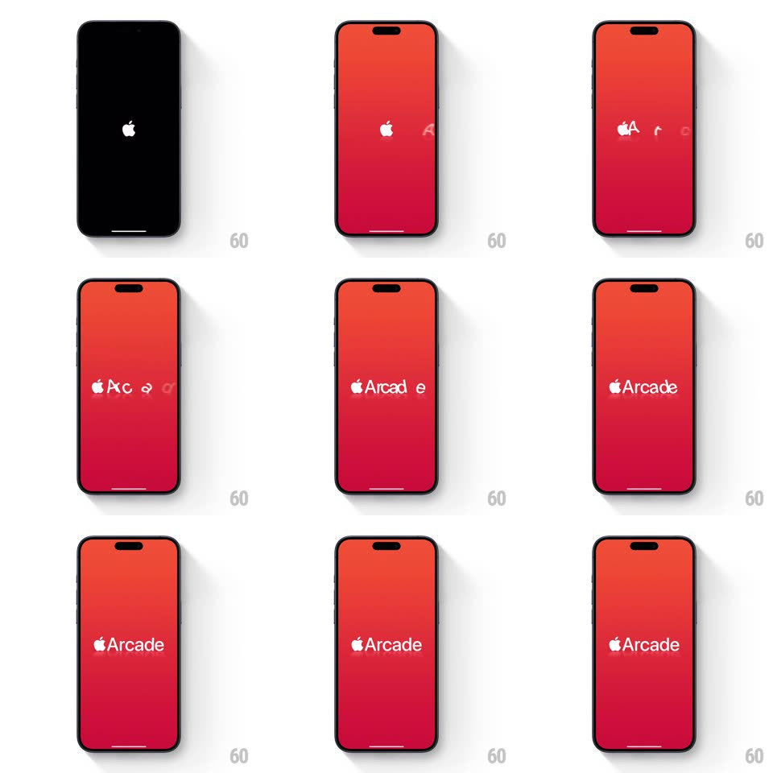

Media
Frame-by-frame

Rebuild this interaction 1:1: Apple Arcade's launch splash - a black screen with the Apple logo gives way to a red gradient stage where blurry, morphing letterforms sharpen and assemble into the white "Apple Arcade" wordmark.

Rebuild this interaction 1:1: Apple Arcade's launch splash - a black screen with the Apple logo gives way to a red gradient stage where blurry, morphing letterforms sharpen and assemble into the white "Apple Arcade" wordmark. ## Integration Integration: stack-agnostic spec - springs given as stiffness/damping, timed motions as duration + curve; map every value to your framework and animation library of choice. ## Scene Full-screen splash. Opens black with a small centered white Apple logo. Then a vertical red gradient (bright red top to deep crimson bottom) fills the screen; the Apple logo shrinks to the left of center as the Arcade glyphs appear beside it. ## Motion spec Pattern: brand splash - blur-morph letterform resolve. - Black-to-red transition: red gradient wipes/fades in from the edges (~400ms) while the Apple logo slides left to its wordmark position. - Each letter of "Arcade" enters as a heavily blurred (~20px), oversized ghost of itself, then resolves: blur -> 0 and scale ~1.4 -> 1 over ~500ms, staggered left to right (~80ms per letter). - Early letters show a brief morph through neighboring glyph shapes (an "A" ghost flickers toward "c" before settling) - a 2-3 frame glyph wobble at low blur. - Final state holds: white Apple logo + "Arcade" in SF-style rounded bold, perfectly still. ## Calibration - Blur does the heavy lifting; opacity stays near 1 throughout - letters smear into focus rather than fade in. - Stagger is quick and uniform; the whole resolve finishes in under 1.5s. ## Reduced motion Crossfade from black screen to final wordmark on red (300ms), no blur morph. ## Don't miss - The red is a vertical gradient, not a flat fill. - The Apple logo does not appear with the letters - it arrives first (from the black screen) and the letters assemble after it.